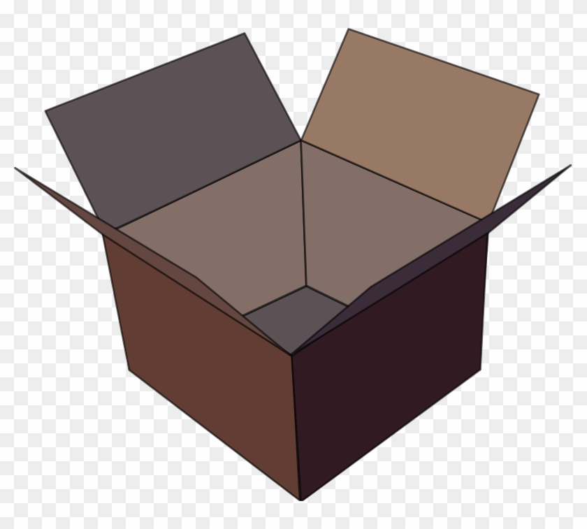

  <ul class="nav nav-tabs">
    <li *ngFor="let category of menusDB | slice:0:4; let i = index" [ngClass]="{'active': i === 0}">
        <a href="#tab-{{i+1}}" data-toggle="tab">{{category.name}}</a>
    </li>
  </ul>
  <div class="tab-content" style="background: transparent !important">

    

    <div class="tab-pane fade in" id="tab-{{i+1}}" 
        *ngFor="let category of menusDB | slice:0:4; let i = index" 
        [ngClass]="{'active': i === 0, 'row': category.image}">
    
        <div class="col-md-5 col-sm-5" *ngIf="category.posts.length > 0">
            <a [href]="category.posts[0].image" class="fancybox-button" 
                title="{{category.posts[0].name}}" data-rel="fancybox-button">

                

                
            </a>
        </div>
        <div class="col-md-7 col-sm-7" *ngIf="category.posts.length > 0">
            <p [ngClass]="{'margin-bottom-10': category.bottom}" [innerHTML]="category.posts[0].description"></p>
            <p><a class="more" routerLink="/posts/{{category.posts[0].id}}">
                Xem thêm <i class="icon-angle-right"></i></a></p>
        </div>

        <div class="col-md-9 col-sm-9" *ngIf="category.posts.length == 0 && !isLoading">
            <p [ngClass]="{'margin-bottom-10': category.bottom}">Chưa có bài viết nào</p>
        </div>

    </div>
  </div>